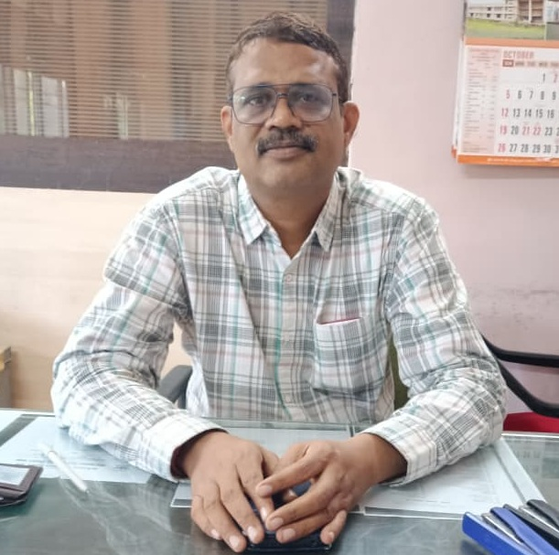

About the Scholarship Department
Our University's Inspiration
Hon'ble Chancellor

Hon'ble Vice-Chancellor

Hon'ble Pro-Vice Chancellor

Registrar

Finance Officer
Our Mission
The Scholarship Department at Swami Ramanand Teerth Marathwada University is dedicated to providing financial assistance and support to deserving students. Our mission is to ensure that every student has access to quality education, regardless of their financial background.
Our Vision
We envision a future where no student is deprived of education due to financial constraints. Through our various scholarship programs, we aim to empower students to achieve their academic and career goals.
Our History
Established in 1994, the Scholarship Department has been a cornerstone of SRTMUN's commitment to student welfare. Over the years, we have helped thousands of students realize their dreams by providing them with the necessary financial support.
Our Team
Our team consists of dedicated professionals who work tirelessly to ensure that scholarships are distributed fairly and efficiently. We are committed to transparency, accountability, and student success.